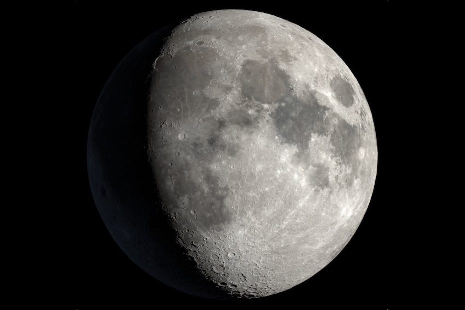

ကောင်းကင်က လကြီးကို မော့ကြည့်ပြီး လကို ဘာနဲ့ လုပ်ထားတာလဲ စဉ်းစားမိ ကြလားဗျာ။ အထူးသဖြင့် လရဲ့ အပေါ်ယံ မျက်နှာပြင် အောက်မှာ ဘာရှိနေမလဲ ဆိုတာကိုပေါ့။
လရဲ့ အတွင်းထဲမှာ ဘာရှိသလဲဆိုတာကို သိပ္ပံ ပညာရှင်တွေ သိချင်ခဲ့တာ ကြာပါပြီ။ အထူးသဖြင့် လရဲ့ ဗဟို အူတိုင်ဟာ ဘာနဲ့ လုပ်ထားတာလဲ ဆိုတာကိုပေါ့။ အခုတော့ ဒီမေးခွန်းကို အဖြေပေးနိုင်ပြီလို ပညာရှင် တွေက ယုံကြည် ကြပါတယ်။
လရဲ့ ဗဟိုအူတိုင်နဲ့ ပါတ်သက်ပြီး နောက်ဆုံး သုတေသန တွေ့ရှိချက် တွေကို Nature သုတေသန ဂျာနယ်မှာ စာတမ်း တင်ပြထားပါတယ်။
ဒီ သုတေသန စာတမ်းအရ လရဲ့ ဗဟိုအူတိုင်ဟာ မာခဲနေတဲ့ အစိုင်အခဲကြီး ဖြစ်ပြီး သူ့ရဲ့ သိပ်သည်းဆ ကလဲ သံလုံးကြီး တစ်လုံးရဲ့ သိပ်သည်းဆနဲ့ အနီးစပ်ဆုံး တူညီတယ်လို့ ဆိုပါတယ်။ ဒီ ဗဟိုက အခဲဖြစ်နေတဲ့ အူတိုင်ကို ရံထားတာကတော့ အရည်ပျော် နေတဲ့ အပြင်အူတိုင်ပဲ ဖြစ်ပါတယ်။
ဒီ တွေ့ရှိချက်ဟာ နေ အဖွဲ့အစည်း ဘယ်လိုဖြစ်လာလဲ ဆိုတဲ့ မေးခွန်းကို ဖြေကြားပေးနိုင်ဖို့ နောက်ထပ် အရေးပါတဲ့ သဲလွန်စ တစ်ခု ဖြစ်တယ်လို့ ပညာရှင်တွေက ဆိုပါတယ်။
အခု တွေ့ရှိချက်ကို နာဆာရဲ့ Gravity Recovery and Interior Laboratory (GRAIL) mission စီမံကိန်းက ကောက်ယူရရှိခဲ့တဲ့ အချက်အလက် တွေကို အသေးစိတ် ခွဲခြမ်းစိတ်ဖြာ သုတေသန ပြုအပြီး တွေ့ရှိ ခဲ့ကြတာ ဖြစ်ပါတယ်။
ဒီ စီမံကိန်းအရ လ ကို ပတ်နေတဲ့ သုတေသန ဂြိုဟ်တု နှစ်လုံးကို ၂၀၁၁ မှာ နာဆာက လွှတ်တင် ခဲ့ပါတယ်။ ဒီ သုတေသန ဂြိုဟ်တုတွေဟာ လရဲ့ ဆွဲငင်အားကို အသေးစိတ် တိုင်းတာပြီး မှတ်တမ်း တင်ခဲ့ ကြပါတယ်။
လ ရဲ့ မြေလွှာအောက်က လှုပ်ရှားမှု တွေဟာ လရဲ့အတွင်းပိုင်းကို ဘယ်လို ဖွဲ့စည်ထားလဲ ဆိုတာနဲ့ ပါတ်သက်တဲ့ အရေးပါတဲ့ သဲလွန်စတွေကို ဖော်ပြ နေပါတယ်။ လ အတွင်းထဲမှာ ငလျှင်တွေ ဖြစ်ပေါ်တဲ့ အခါ ဒီ ငလျင်လှိုင်းတွေဟာ လရဲ့ ကျောက်သားတွေ အကြား ဖြတ်သွားရပါတယ်။ ဒီ လှိုင်းတွေကို ဖမ်းယူပြီး လ ရဲ့ အတွင်းပိုင်း ဖွဲ့စည်းပုံကို လေ့လာနိုင်ပါတယ်။
၁၉၆၀ နဲ့ ၁၉၇၀ ပြည့်လွန်နှစ်တွေက လပေါ်ကို လူဆင်းသက် ခဲ့တဲ့ အပိုလို စီမံကိန်း ကာလအတွင်းကတဲက လ ရဲ့ ငလျင်လှုပ်ရှားမှုကို နာဆာက ကောာက်ယူ စုဆောင်း ခဲ့ပါတယ်။ ဒါပေမယ့် အဲ့သည်အချိန်က နည်းပညာ အဆင့်နိုမ့်သေးတာမို့ ငလျှင်လှိုင်းတွေကို အသေးစိတ် မဖမ်းယူနိုင် ခဲ့ပါဘူး။ ဒါပေမယ့် အပိုလို စီမံကိန်းက ရရှိခဲ့တဲ့ အချက်အလက် အနည်းအကျဉ်းကို အသုံးပြုပြီး လရဲ့ မျက်နှာပြင်အောာက် မိုင် ၂,၇၀၀ အနက်မှာ သံတွေ အဓိက ပါဝင်တဲ့ အူတိုင်ကို တွေ့ရှိခဲ့တယ်လို့ ကြေငြာ ခဲ့ပါတယ်။
အခု သုတေသန ဂြိုဟ်တု နှစ်ခုက ရရှိတဲ့ အချက်အလက် တွေနဲ့ အခြား ကောက်ယူရရှိထားတဲ့ အချက်တွေကို အသုံးချပြီး ကွန်ပြူတာနဲ့ တွက်ချက် ကြည့်ခဲ့ ကြပါတယ်။ ဒါ့အပြင် ကမ္ဘာရဲ့ ဆွဲငင်အား (gravity) သက်ရောက်မှုကြောင့် လရဲ့ မျက်နှာပြင် ပြောင်းလဲမှု ကိုလဲထည့်သွင်း တွက်ချက် ရပါတယ်။
ဒီတွက်ချက် မှုတွေအရ လ ရဲ့ ဗဟိုအူတိုင်ဟာ အရည်ပျော်မနေပဲ မာကျောတဲ့ သံတုံးကြီးတစ်တုံး အဖြစ် ရှိနေတယ်လို့ ဆိုပါတယ်။
အခုလို မာကျောတဲ့ အူတိုင် ရှိနေမှုကြောင့် ယခင်က ယူဆထား ခဲ့ကြတဲ့ လရဲ့ သံလိုက်စက်ကွင်း ဖြစ်ပေါ်မှုနဲ့ ပါတ်သက်တဲ့ သီမိုရီတွေဟာလဲ မေးခွန်း ထုတ်စရာ ဖြစ်လာခဲ့တယ်လို့ သိရပါတယ်။
Ref: Scientists think they’ve finally solved the mystery of what’s inside the Moon | Interesting Engineering
လထဲမှာ ဘာရှိလဲ ဖော်ထုတ်နိုင်ပြီ

May 10, 2023
Other Posts
- အလိမ်အညာ App များကို အားပေးနေဟု Apple အားစွပ်စွဲ
- အလင်းအလျှင်ထက် မြန်အောင်သွားမယ့် Warp Drive
- သိပ္ပံပညာရှင်များက အာကာသယာဉ်မှုးများ၏ မစင်မှ အစာထုတ်ရန် သုတေသနပြု
- အပြည်ပြည် ဆိုင်ရာ အာကာသစခန်း ၂၀၃၁ မှာ ပျက်ကျမယ်
- အလုံပိတ်ထားသော ရှေးအီဂျစ် ခေါင်းတလား ၆ ခုအတွင်းမှ ပစ္စည်းများ ဖော်ထုတ်နိုင်ပြီ
- ဂရပ်ဖင်း ကို ဈေးသက်သက်သာသာဖြင့် ထုတ်နိုင်တော့မည်
- မစ်ကီးဝေးရဲ့ ဗဟိုက ထူးဆန်းတဲ့ ရေဒီယို အချက်ပြလှိုင်းများ
- အာကာသထဲကို ဘယ်လောက် ဝေးဝေးထိ မြင်နိုင်သလဲ
- အကယ်လို့သာ ကမ္ဘာလည်နှုန်း ပိုမြန်လာရင် ဘာတွေဖြစ်လာ နိုင်သလဲ
- Black hole တွေ တိုက်မိရာက ထွက်လာတဲ့ ဆွဲငင်အားလှိုင်း အမြောက်အများ ဖမ်းမိ